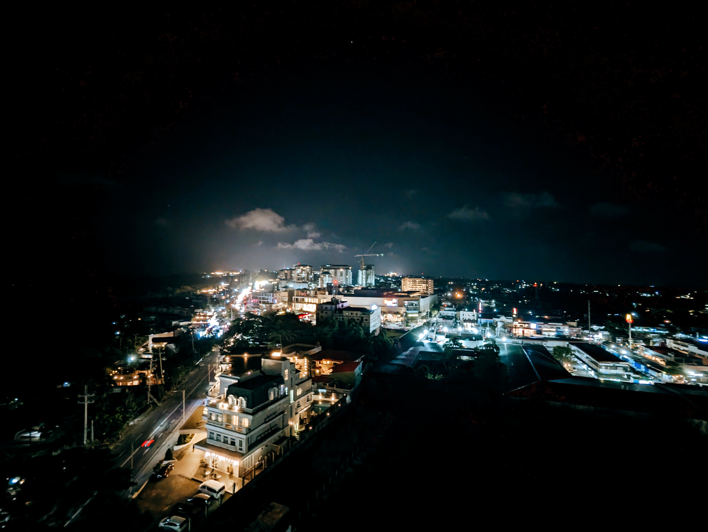
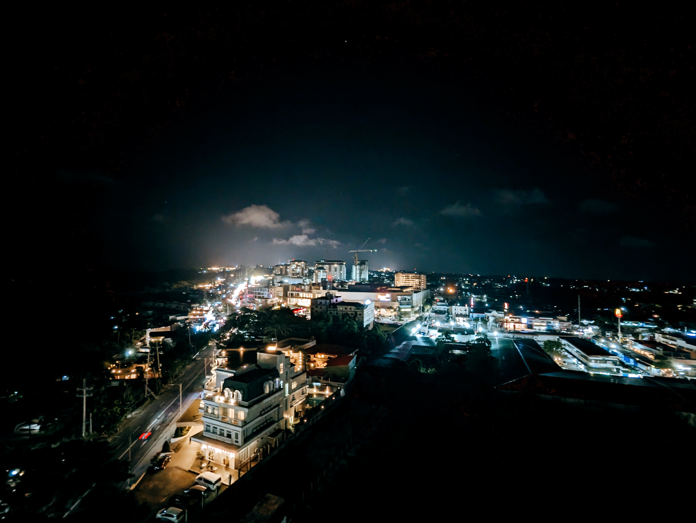
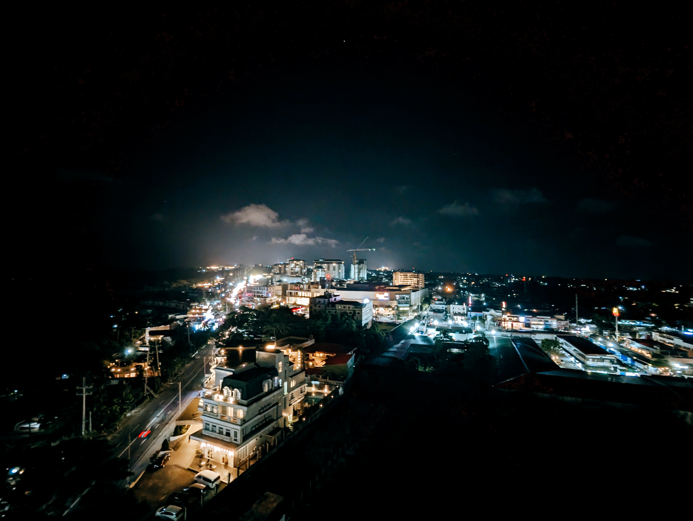

.png)

 



A photo journal of some cool places I visited within and outside the Philippines, where I was raised and born. I want to share these fantastic photos taken with a burning passion to experience life.
I do mobile photography with a Pixel 6 Pro on hand. All the photos you'll see are taken by me using my handheld device and post-processed using the Digital Film App.

A photography enthusiast who shoots using his mobile phone. I enjoy all kinds of art, but photography interests me the most.
That explains why I ventured into starting this passion project. I am also a front-end web developer who seeks to collaborate with other developers for my portfolio projects. Tech is one of the fields I am interested in; I am well-versed in Data analytics and have a basic understanding of SEO.
Moreover, this passion project is intended to showcase pleasant, memory-inducing photos from my trips. But this could also be a medium for me to get partners or collaborators for my web development journey.

In case you're interested in a photography or web development collaboration with me, you may contact me via my social media channels below:
Or email me at joshua.mizal@yahoo.com.